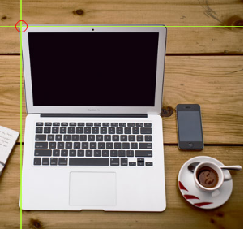
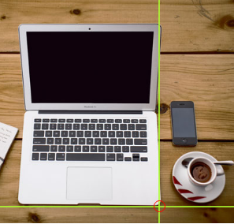
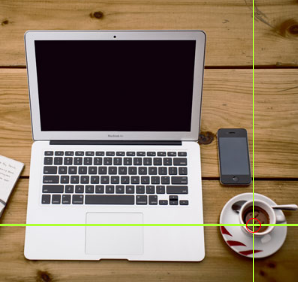
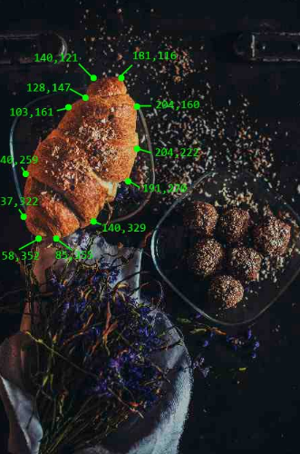

HTML பட வரைபடங்கள்
HTML பட வரைபடங்களைப் பயன்படுத்தி, ஒரு படத்தில் கிளிக் செய்யக்கூடிய பகுதிகளை உருவாக்கலாம்.
பட வரைபடங்கள் என்றால் என்ன?
பட வரைபடம் என்பது கிளிக் செய்யக்கூடிய பகுதிகளைக் கொண்ட ஒரு படமாகும். இந்த பகுதிகள் ஒன்று அல்லது அதற்கு மேற்பட்ட <area> குறிச்சொற்களால் வரையறுக்கப்படுகின்றன.
படம் 1: அடிப்படை பட வரைபட எடுத்துக்காட்டு (img2.png)
பட வரைபடங்கள் எவ்வாறு செயல்படுகின்றன?
பட வரைபடத்தின் பின்னுள்ள யோசனை என்னவென்றால், நீங்கள் படத்தில் எந்த இடத்தைக் கிளிக் செய்கிறீர்களோ அதைப் பொறுத்து வெவ்வேறு செயல்களைச் செய்ய வேண்டும்.
ஒரு பட வரைபடத்தை உருவாக்க, உங்களுக்கு ஒரு படம் மற்றும் கிளிக் செய்யக்கூடிய பகுதிகளை விவரிக்கும் சில HTML குறியீடு தேவை.

படம் 2: கணினி, தொலைபேசி, காபி கோப்பை - கிளிக் செய்யக்கூடிய பகுதிகள் (img3.png)
எடுத்துக்காட்டு குறியீடு
மேலே உள்ள பட வரைபடத்திற்கான HTML மூலக் குறியீடு:
HTML Code
<img src="workplace.jpg" alt="Workplace" usemap="#workmap">
<map name="workmap">
<area shape="rect" coords="34,44,270,350" alt="Computer" href="computer.htm">
<area shape="rect" coords="290,172,333,250" alt="Phone" href="phone.htm">
<area shape="circle" coords="337,300,44" alt="Coffee" href="coffee.htm">
</map>
படம் 3: HTML குறியீட்டின் கட்டமைப்பு (img4.png)
வடிவ வகைகள்
கிளிக் செய்யக்கூடிய பகுதியின் வடிவத்தை நீங்கள் வரையறுக்க வேண்டும், மேலும் இந்த மதிப்புகளில் ஒன்றை நீங்கள் தேர்வு செய்யலாம்:
rect
செவ்வகப் பகுதியை வரையறுக்கிறது
circle
வட்டப் பகுதியை வரையறுக்கிறது
poly
பலகோணப் பகுதியை வரையறுக்கிறது
default
முழுப் பகுதியையும் வரையறுக்கிறது
வடிவம்="rect" (செவ்வகம்)
shape="rect" க்கான ஆயங்கள் ஜோடிகளாக வருகின்றன, ஒன்று x-அச்சுக்கும் மற்றொன்று y-அச்சுக்கும்.
படம் 4: செவ்வக வடிவத்திற்கான ஆயத்தொலைவுகள் (img5.png)
<area shape="rect" coords="34, 44, 270, 350" href="computer.htm">வடிவம்="circle" (வட்டம்)
முதலில் வட்டத்தின் மையத்தின் ஆயங்களைக் கண்டறியவும்:

படம் 5: வட்ட வடிவத்திற்கான ஆயத்தொலைவுகள் (img6.png)
<area shape="circle" coords="337, 300, 44" href="coffee.htm">வடிவம்="poly" (பலகோணம்)
shape="poly" பல ஆயப் புள்ளிகளைக் கொண்டுள்ளது, இது நேர் கோடுகளால் உருவான ஒரு வடிவத்தை உருவாக்குகிறது.
படம் 6: பலகோண வடிவ எடுத்துக்காட்டு (img7.png)
பட வரைபடங்கள் மற்றும் JavaScript
கிளிக் செய்யக்கூடிய பகுதி ஒரு JavaScript செயல்பாட்டையும் தூண்டும்.
பகுதி கிளிக் செய்யப்படும் போது JavaScript செயல்பாட்டை இயக்க, <area> உறுப்புக்கு ஒரு கிளிக் நிகழ்வைச் சேர்க்கவும்:
JavaScript Example
<map name="workmap">
<area shape="circle" coords="337,300,44" href="coffee.htm" onclick="myFunction()">
</map>
<script>
function myFunction() {
alert("You clicked the coffee cup!");
}
</script>படம் 7: JavaScript உடன் ஒருங்கிணைப்பு (img8.png)
அத்தியாய சுருக்கம்
படம் 8: பட வரைபட கோட்பாட்டின் சுருக்கம் (img9.png)
- பட வரைபடத்தை வரையறுக்க HTML <map> உறுப்பைப் பயன்படுத்தவும்
- பட வரைபடத்தில் கிளிக் செய்யக்கூடிய பகுதிகளை வரையறுக்க HTML <area> உறுப்பைப் பயன்படுத்தவும்
- பட வரைபடத்தைச் சுட்டிக்காட்ட, <img> உறுப்பின் HTML
usemapபண்புக்கூறைப் பயன்படுத்தவும்
பயிற்சி

படம் 9: பயிற்சி எடுத்துக்காட்டு (img10.png)
பட வரைபடத்தை வரையறுப்பதற்கான சரியான HTML உறுப்பு எது?
HTML பட குறிச்சொற்கள்
படம் 10: HTML பட குறிச்சொற்களின் குறிப்பு (img11.png)
| குறிச்சொல் | விளக்கம் |
|---|---|
| <img> | ஒரு படத்தை வரையறுக்கிறது |
| <map> | ஒரு பட வரைபடத்தை வரையறுக்கிறது |
| <area> | பட வரைபடத்திற்குள் கிளிக் செய்யக்கூடிய பகுதியை வரையறுக்கிறது |
| <picture> | பல பட வளங்களுக்கான கொள்கலனை வரையறுக்கிறது |
அனைத்து கிடைக்கக்கூடிய HTML குறிச்சொற்களின் முழுமையான பட்டியலுக்கு, எங்கள் HTML குறிச்சொல் குறிப்பைப் பார்வையிடவும்.
பட வரைபட பயன்பாடுகள்
பல்வேறு தொழில்துறைகளில் பட வரைபடங்கள் எவ்வாறு பயன்படுத்தப்படுகின்றன என்பதற்கான எடுத்துக்காட்டுகள்:
அடிப்படை எடுத்துக்காட்டு
img2.png - முதல் பட வரைபடம்
பணியிட வரைபடம்
img3.png - கிளிக் செய்யக்கூடிய பொருட்கள்
குறியீட்டு கட்டமைப்பு
img4.png - HTML குறியீட்டு வரைபடம்
செவ்வக வடிவம்
img5.png - ஆயத்தொலைவுகளுடன்
வட்ட வடிவம்
img6.png - மையம் மற்றும் ஆரம்
பலகோண வடிவம்
img7.png - பல புள்ளி ஆயங்கள்
நினைவில் கொள்ள: பட வரைபடங்கள் இணையதளங்கள், கல்வி பொருட்கள், தயாரிப்பு பட்டியல்கள் மற்றும் விளையாட்டுகளில் பரவலாகப் பயன்படுத்தப்படுகின்றன.
சிறந்த நடைமுறைகள்
alt பண்புக்கூறுகளைப் பயன்படுத்தவும்
ஒவ்வொரு <area> உறுப்புக்கும் விளக்கமான alt உரையை வழங்கவும்
ஆயங்களைச் சரிபார்க்கவும்
ஆயங்கள் சரியானவை என்பதை உறுதிப்படுத்த பட வரைபட சோதனை கருவிகளைப் பயன்படுத்தவும்
மிகவும் சிக்கலான வடிவங்களைத் தவிர்க்கவும்
சிக்கலான பலகோண வடிவங்கள் பராமரிப்பதற்கு கடினமாக இருக்கும்
செயல்திறனுக்காக மாற்று முறைகளை வழங்கவும்
பட வரைபடங்கள் செயல்படாத போது மாற்று வழிசெலுத்தலை வழங்கவும்